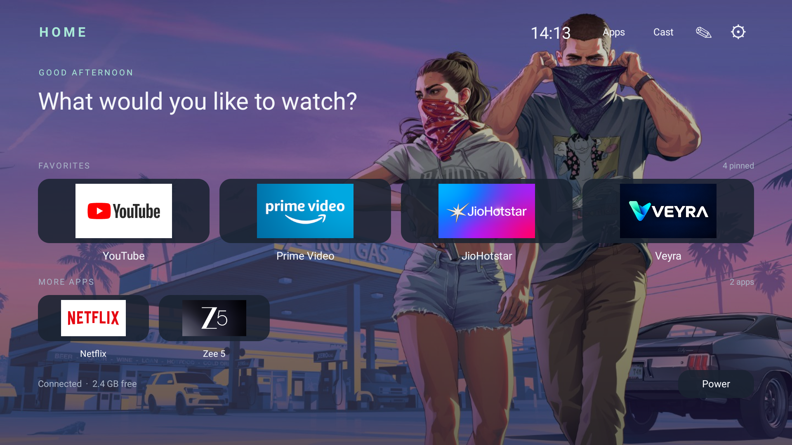
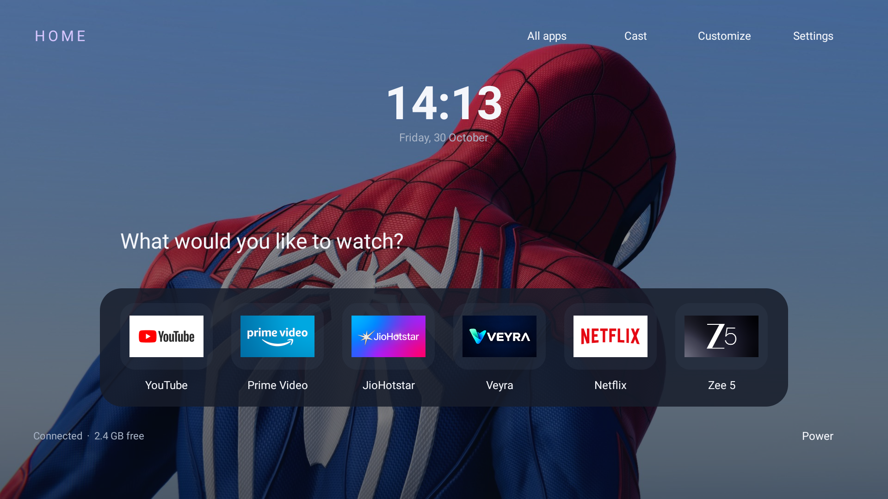
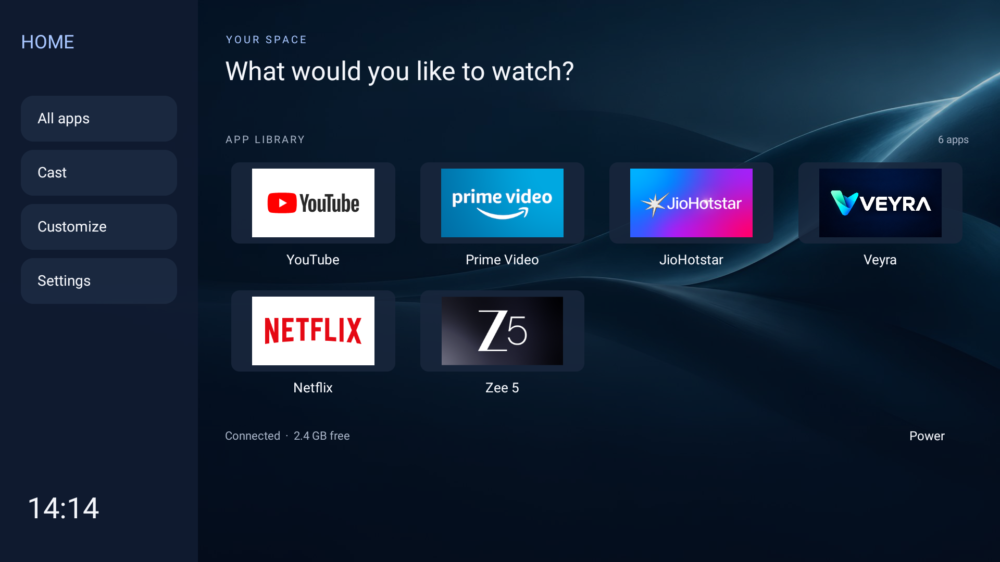

<!doctype html><html lang="en"><meta charset="utf-8"><title>TV Home Studio — three themes</title>
<style>*{box-sizing:border-box}body{margin:0;background:#09121c;color:#f1f6ff;font-family:Arial,sans-serif;width:1200px;padding:42px}header{margin-bottom:32px}header p{font-size:18px;letter-spacing:3px;color:#a5bed0;margin:0 0 12px}h1{font-size:48px;letter-spacing:-1px;margin:0}section{margin:0 0 26px}h2{font-size:25px;display:flex;justify-content:space-between;align-items:baseline;margin:0 0 12px}h2 span{font-size:16px;font-weight:400;color:#a5b4c8}img{display:block;width:1116px;height:auto;border:1px solid #314155;border-radius:12px}footer{font-size:16px;line-height:1.5;color:#a5b4c8;margin-top:10px}</style>
<header><p>TV HOME STUDIO · NO ROOT</p><h1>One stick. Three homes.</h1></header>
<section><h2>Classic <span>Favorites up front</span></h2></section>
<section><h2>Cinema <span>Wallpaper and a floating dock</span></h2></section>
<section><h2>Panel <span>Sidebar navigation and an app grid</span></h2></section>
<footer>Actual captures from a Fire TV Stick HD · User-selected wallpapers, not bundled<br>Completely vibe coded with Codex</footer></html>